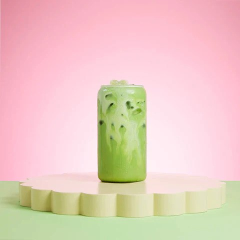

Back to Recipe Homepage!
Iced Matcha Latte

An iced treat, full of anti-oxidants and goodness. An iced matcha will be sure to perk you up
and keep you energised during those Saturday shopping sessions or those long beach party days!
Ingredients
You Will Need:
- One Half Teaspoon of Ceremonial Grade Matcha
- Cold Water
- Hot or Boiling Water - 80c is preferred
- 250ml of Your Milk or Milk Alternative
- OPTIONAL: Vanilla Syrup to Taste
Step-by-Step
- Place your half teaspoon of matcha in a bowl with high sides (a cereal bowl will do).
- Add a splash, approximately 25ml of your COLD water to the bowl. Whisk over this so that your matcha is covered in water.
- Add approximately 75ml of your HOT OR BOILING water to the bowl. Whisk this thoroughly in an 'M' motion, preferably with a chasen (traditional matcha bamboo whisk)
- Now it is time to whisk in your 10ml of vanilla syrup for taste if you prefer vanilla matcha.
- Pour your matcha into a cocktail shaker filled with ice and shake, shake, shake baby!
- Strain out the ice cubes so that you are left with a ice cold matcha shot.
- Fill your glass with your milk (or milk alternative) and ice ready to pour your iced matcha on top!
- For a gradient affect, pour your matcha over the ice cubes very slowly.
- Enjoy!